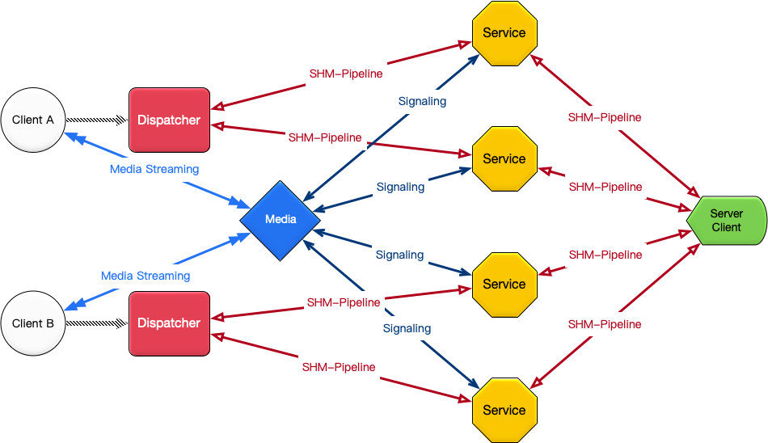

服务器 Java Client¶
当您的服务器需要从时信魔方服务器获取数据或者管理时信魔方服务器时，可以使用服务器的 Client 程序。
工作原理¶
服务器 Client 直接连接服务单元服务器。如下图所示：

服务器 Java Client 数据流¶
Server Client 使用 SHM 协议连接到服务单元节点，建立长连接双工数据通道。实现包括事件监听和数据处理的能力：
监听服务单元的功能事件
更新或修改数据实体数据
查询各模块数据
监视服务器工况
快速开始¶
获取项目代码
mkdir cube cd cube # 从仓库获取代码 git clone https://gitee.com/shixinhulian/cube-server-dependencies.git git clone https://gitee.com/shixinhulian/cube-server.git git clone https://gitee.com/shixinhulian/cube-server-client.git
编译项目
# 编译服务器项目 cd cube-server make all # 编译客户端项目 cd ../cube-server-client ant build
在项目中导入 JAR 文件
完成构建之后，在
cube-server-client的build目录下将生成cube-server-client-X.X.X.jar的客户端 JAR 库文件。在项目中导入该 JAR 库文件，并导入 Client 的依赖文件：cube-server-dependencies/json-20201115.jarcube-server-dependencies/cell-2.3.jarcube-server/build/cube-common-3.0.jar
使用 CubeClient 对象
客户端程序提供
CubeClient作为 API 入口，因此，使用时仅需要实例化该类，并使用该类提供的方法进行操作。// 创建客户端实例 CubeClient client = new CubeClient("111.72.86.12"); [...] // 注册联系人监听器 client.registerListener(new ContactListener() { [...] }); [...] // 销毁客户端 client.destroy();
详细方法说明可以查看 客户端 API 文档 。
常用功能示例¶
监听联系人事件¶
使用 ContactListener 监听器接口可以监听连接到服务单元上的联系人行为。
// 注册监听器
client.registerListener(new ContactListener() {
@Override
public void onSignIn(CubeClient client, Contact contact, Device device) {
System.out.println("[ContactListener] onSignIn : "
+ contact.getId() + " - " + device.getName());
}
@Override
public void onSignOut(CubeClient client, Contact contact, Device device) {
}
@Override
public void onDeviceTimeout(CubeClient client, Contact contact, Device device) {
}
});
以联系人身份发送消息¶
有时我们需要从应用服务器给魔方引擎的应用发送消息，例如：客服人员给客户发送消息。服务器 Client 允许您的应用服务器以指定联系人直接向客户端应用程序发送消息。
// 接收消息的联系人
Contact receiver = new Contact(100100L, "shixincube.com", "Cube-500100");
// 服务器伪装的联系人
Contact pretender = new Contact(100200L, "shixincube.com", "Pretender");
Device device = new Device("Server", "Server Client");
JSONObject payload = new JSONObject();
payload.put("content", "您的消息已收到，马上去核实。");
// 使用 pushMessageWithPretender 向接收联系人推送消息
boolean result = client.pushMessageWithPretender(receiver, pretender, device, payload);
System.out.println("Push Result: " + result);